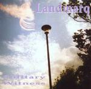

| Artist: | Landmarq |
| Title: | Solitary Witness |
| Label: | Cyclops CYCL116 |
| Length(s): | 65 minutes |
| Year(s) of release: | 1992/2002 |
| Month of review: | [10/2002] |
| 1) | Killing Fields | 4.53 |
| 2) | Forever Young | 8.53 |
| 3) | April First | 4.54 |
| 4) | Foxing The Fox | 4.26 |
| 5) | Terracotta Army | 6.37 |
| 6) | Free Fall | 3.34 |
| 7) | Tippi Hedren | 7.42 |
| 8) | After I Died Somewhere | 3.34 |
| 9) | Suite: St. Helens | 9.51 |
| 10) | Borders | 4.59 |
| 11) | Suite: St. Helens (alternative Version) | 5.26 |
Forever Young has an even poppier start. Only after several minutes of happy go bounce stuff do we move into a tranquil and lengthy guitar intermezzo that's pretty nice, a reprieve even.
April First is a friendly, if rather unstriking, instrumental, dominated by piano.
Foxing The Fox has a bit more gusto, sort of a tongue in cheek track. Bleepy keyboards and stampeding guitar.
With Terracotta Army we finally seem to be kicking in gear. The rhythm lays a base clearly referring to the title, strengthened by keys and guitar. Good track.
Freefall is another of those friendly instrumentals.
Tippi Hedren starts with the murder scene violin sounds from Psycho. Not a bad track.
After I Died Somewhere is a tormented ballad. One of the better tracks on this album.
Suite: St. Helens starts with a sparkling duel between guitar and piano, unfortunately the guitar wins out to move into a section that's dominated by it, really. Towards the start of the vocal section the balance returns. This track definitely deserves the moniker suite. Another good one.
Borders starts another track that doesn't do much for me: rather flat in both rhythm and melody. But things look up starting the decent bridge, followed by some more okay stuff.
The bonus track Suite: St Helens is an abbreviated version, with different vocalist. Some of the guitar bits I don't care for much are out, making this version my favourite, although it's a shame, of course, about the bits I did like that are out too. Oh well, we're all confronted with options and choices...